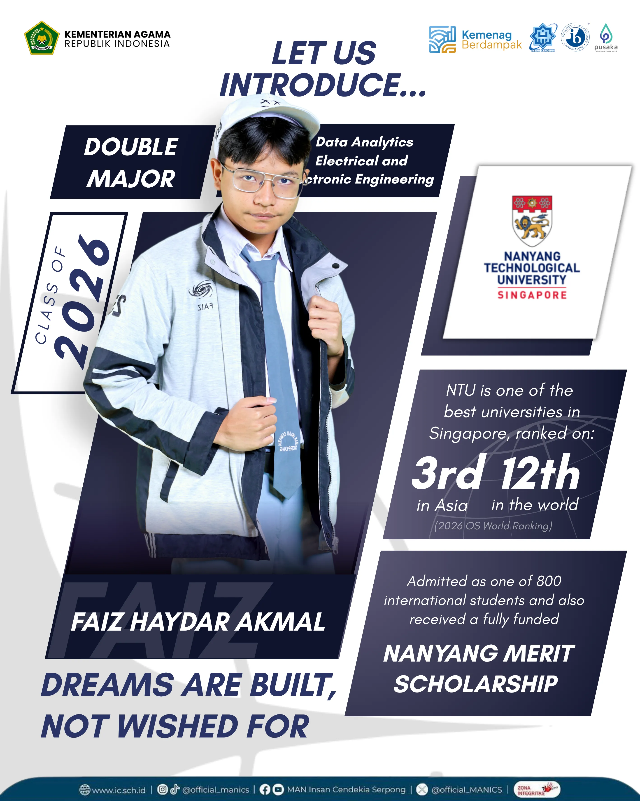
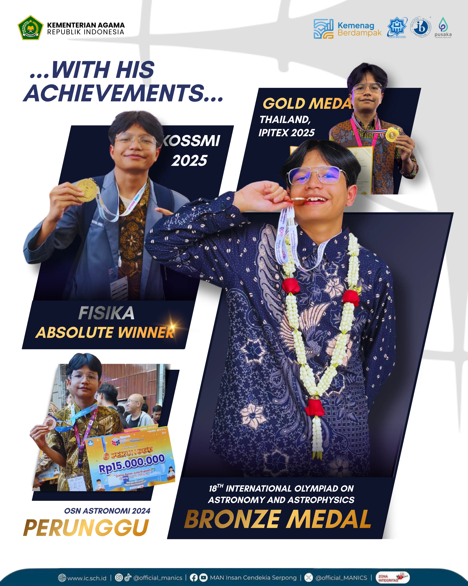
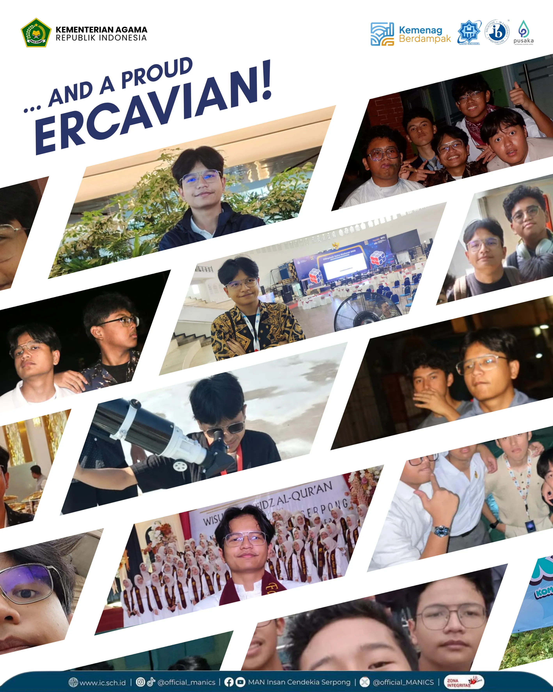

Faiz Haydar Akmal lahir di Semarang pada 18 Agustus 2007. Sejak kecil, ia dikenal sebagai sosok yang haus ilmu dan selalu bersenang belajar terutama pada pelajaran favoritnya astronomi, computer dan fisika. Hiburan yang selalu menemaninya disaat stress belajar adalah menonton anime dan hal ini lah yang membuatnya jatuh cinta pada Jepang. Impian terbesarnya adalah bisa kuliah dan tinggal di Jepang suatu hari nanti. Dengan tekad kuat, ia terus berusaha mewujudkan cita-citanya. Penasaran dengan kisah hidupnya? Yuk, intip Instagramnya di @faizakmml!